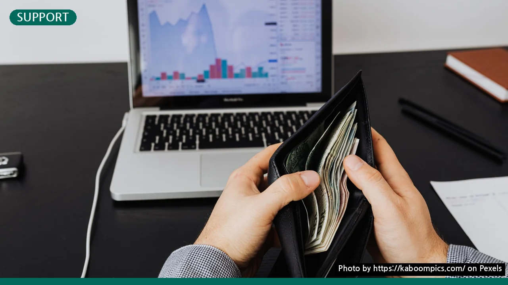

청년내일저축계좌 신청 자격 3가지 조건과 10만원으로 시작하는 방법
사진: https://kaboompics.com/ / Pexels (무료 이미지, 출처 표기)
청년내일저축계좌란? 3배로 불어나는 핵심 혜택 요약
청년내일저축계좌 신청을 고민하고 계시나요? 매달 10만 원만 꾸준히 저축해도 정부가 동일한 금액 혹은 그 이상의 매칭 지원금을 적립해 주는 대표적인 청년 자산 형성 지원 사업입니다. 일하는 청년이 안정적으로 미래를 준비할 수 있도록 돕는 것이 핵심 목적입니다.
보건복지부(Ministry of Health and Welfare)에 따르면, 이 제도는 3년 만기를 유지할 경우 본인 납입금 360만 원에 더해 정부지원금과 예축 이자까지 일시에 수령하게 됩니다. 가구 소득 수준에 따라 지원금 적립 비율이 달라지므로, 신청 전에 본인이 어느 구간에 속하는지 먼저 파악하는 것이 중요합니다.
청년내일저축계좌 신청 자격: 나이, 소득, 가구 기준
이 계좌를 개설하기 위해서는 보건복지부가 고시한 세 가지 핵심 기준인 나이, 개인 소득, 가구 소득 조건을 동시에 충족해야 합니다. 조건이 까다로워 보이지만 차근차근 따져보면 어렵지 않습니다.
- 나이 기준: 신청일 기준 만 19세 이상부터 만 34세 이하까지 신청할 수 있습니다. 단, 기초생활수급자나 차상위계층 청년은 만 15세 이상부터 만 39세까지 폭넓게 허용됩니다.
- 개인 소득: 현재 근로 중이어야 하며, 월 근로 및 사업 소득이 50만 원 초과 230만 원 이하인 청년이 대상입니다. (기초수급자 및 차상위 계층은 월 10만 원 이상이면 신청 가능합니다.)
- 가구 소득: 청년이 속한 가구의 소득인정액이 기준 중위소득 100% 이하여야 합니다. 가구원 수에 따라 기준 금액이 달라지므로 주민등록등본상 가구원을 확인해야 합니다.
중위소득 구간별 정부지원금 비교
청년내일저축계좌는 소득 수준에 따라 매칭되는 지원금 액수가 크게 달라집니다. 본인이 속한 구간의 매칭 비율을 아래 표를 통해 직접 비교해 보세요.
위 표는 2026년 기준 정부 안을 바탕으로 작성되었으며, 가구 자산 평가 방식이나 가구원 수 산정 기준에 따라 미세한 변동이 있을 수 있습니다. 정확한 모의 계산은 복지로 웹사이트를 이용하는 것이 가장 정확합니다.
청년내일저축계좌 신청 방법 및 필요 서류
자격 요건을 채웠다면 제때 신청을 완료해야 합니다. 매년 상반기에 집중적으로 신청을 받기 때문에 시기를 놓치지 않도록 주의해야 합니다. 신청은 온라인과 오프라인 주민센터를 통해 모두 가능합니다.
- 복지로 홈페이지 자가진단: 신청 전에 '복지로' 사이트의 모의계산 메뉴를 통해 본인의 가구 중위소득과 재산 기준이 부합하는지 미리 가늠해 봅니다.
- 필수 서류 준비: 재직증명서나 근로계약서, 소득을 증빙할 수 있는 국세청 소득금액증명원, 주민등록등본 및 가족관계증명서 등을 미리 구비해 둡니다. 프리랜서나 일용직 근로자의 경우 고용임금확인서 등이 추가로 필요할 수 있습니다.
- 신청서 접수: 주소지 관할 읍면동 행정복지센터(주민센터)를 방문하여 신청하거나, 인터넷 '복지로' 포털에 접속해 공동인증서로 로그인 후 온라인으로 신청서를 제출합니다.
유지 기간 중 주의사항 및 중도 해지 예방 팁
계좌를 성공적으로 개설했더라도 3년 만기를 채우지 못하고 중도 해지하면 정부지원금을 단 한 푼도 받지 못하게 됩니다. 따라서 중도 해지를 예방하기 위한 몇 가지 약정을 반드시 기억해야 합니다.
첫째, 3년의 가입 기간 동안 반드시 근로 활동을 계속 유지해야 합니다. 이직으로 인한 짧은 공백은 허용되나, 장기 실직 상태가 되면 계좌가 해지될 수 있습니다. 둘째, 가입 기간 중 총 3회 제공되는 자립역량교육(총 10시간)을 이수해야 하며, 자금사용계획서를 만기 전에 제출해야 지원금이 전액 지급됩니다.
만약 군 입대나 육아휴직, 임신 및 출산 등으로 근로를 계속하기 어려운 예외적인 상황이 발생한다면 '적립 중지 제도'를 신청할 수 있습니다. 가입 기간 중 최대 6개월 동안 납입과 지원금 매칭을 일시 정지할 수 있으므로, 무작정 해지하기 전에 행정복지센터 담당자와 상담하시는 것이 현명합니다. 구체적인 모집 일정과 세부 요건은 매년 변경될 수 있으므로, 신청 전 보건복지부 콜센터(129)나 자산형성지원센터 홈페이지를 통해 최신 공고를 다시 한 번 확인하시길 권장합니다.
🔗 이 글도 함께 보면 좋아요: 청년도약계좌 조건과 신청 방법: 최대 5천만원 목돈 마련 체크리스트